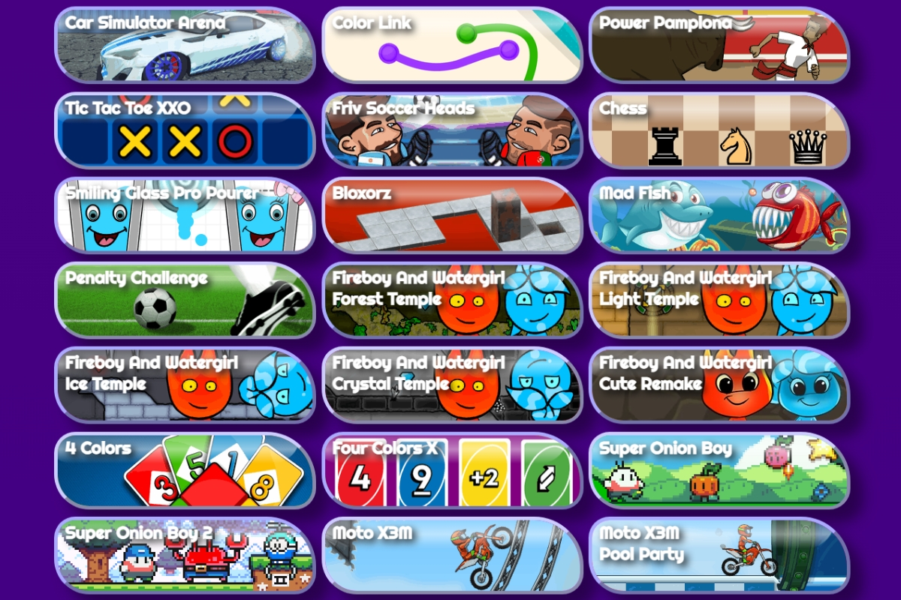

Friv Games - Gateway Play Games Online For Free
Friv Games have become a go-to destination for quick, casual, and fun gaming experiences. Whether you're a kid on a school break, a teen looking for a few minutes of fun, or an adult wanting to unwind, Friv Games offer something for everyone. In this article, we'll explore what makes Friv Games so appealing, which titles are must-tries, and how this simple platform continues to be a favorite among browser gamers.

What Are Friv Games?
Friv Games are browser-based, free-to-play games hosted on the Friv platform. They require no downloads, no sign-ups, and are incredibly easy to access. With just a few clicks, players can dive into hundreds of games across various genres—from action-packed adventures to mind-bending puzzles.
"Friv Games are like the digital playgrounds of the internet—no fuss, no installs, just pure gaming" says Lucas Tran, a digital gaming educator.
Why Are Friv Games So Popular?
Simplicity and Accessibility
- No need for powerful hardware or downloads
- Games are playable on most devices including tablets and smartphones
- Instant load times and intuitive controls
Variety of Games
- Action, puzzle, racing, dress-up, strategy, and more
- Frequent updates and new titles
Safe for Kids
- Many titles are designed specifically for children
- No in-app purchases or chat features
Friv Games bring gaming back to basics: click, play, enjoy.
Top Friv Games Categories
🔫 Action
Fight enemies, collect power-ups, and test your reflexes in fast-paced gameplay.
🔍 Adventure
Solve mysteries, complete quests, and immerse yourself in unique worlds.
🧩 Puzzle
Train your brain with logic-based challenges and clever mechanics.
👗 Dress-Up
A creative outlet where kids and teens style characters for fun.
🚗 Racing
Speed through tracks, dodge obstacles, and aim for high scores.
Must-Try Friv Games
- Fireboy and Watergirl – Navigate elemental puzzles using teamwork.
- Moto X3M – Perform daring stunts on a motorbike.
- Bloxorz – Shift and rotate blocks through 3D mazes.
- Snail Bob – Help a quirky snail reach the exit in a variety of scenarios.
"Games like Fireboy and Watergirl teach coordination and timing in a playful way" notes Emily Rosario, a child development specialist.
How to Play Friv Games
Playing is easy:
- Open your browser.
- Go to Friv-Games.store.
- Browse the homepage for game thumbnails.
- Click on a game and start playing instantly.
No account creation. No credit card. Just games.
Other Official Friv Game Websites
Looking for alternative platforms with a similar Friv-style experience? Here are some official and recommended websites that offer curated collections of free online games:
- Friv4School.guru – A school-friendly version of Friv, featuring safe and educational games suited for classroom use and younger audiences.
- Friv-2017.cfd – Focuses on classic Friv titles and games from the 2017 catalog, ideal for players seeking a bit of nostalgic fun.
- Friv-Classic.quest – Brings back iconic games from earlier Friv generations with a clean, minimal layout and quick loading times.
- Friv-Jogos.cfd – A version geared toward Portuguese-speaking users, offering localized gameplay and intuitive navigation.
These platforms maintain the spirit of Friv—simple, safe, and fun gaming for all.
Voice Search Optimization: Common Questions
❓ What are the best Friv Games for kids?
Fireboy and Watergirl, Snail Bob, and dress-up games are great picks for younger players.
❓ Are Friv Games free?
Yes, 100% free. No hidden fees or in-game purchases.
❓ Can I play Friv Games on mobile?
Yes, most Friv Games are optimized for mobile browsers.
❓ Do Friv Games require an account?
Nope. No registration needed.
❓ Are Friv Games safe for children?
Yes, the platform features kid-friendly games without ads or chat.
❓ What are Friv Games?
They're free online games you can play instantly in your browser.
❓ Is Friv Games safe to use?
Yes, it’s safe and especially good for kids due to its simple, ad-free interface.
❓ Can I access Friv Games on an iPad or phone?
Absolutely. Just open your browser and visit the site.
❓ What are some good puzzle games on Friv Games?
Try Bloxorz and Snail Bob for clever challenges.
❓ Are there educational games on Friv Games?
Yes, some games enhance problem-solving and coordination skills.
"Parents appreciate Friv Games for its ease and child-friendly content" adds Dr. Naomi Bell, an education technology consultant.
Final Thoughts
Friv Games continue to charm players with their accessibility, simplicity, and fun. Whether you're looking for a brain teaser, a high-speed chase, or just a bit of nostalgic entertainment, Friv has you covered.
👉 So why wait? Jump into the world of Friv Games today and discover your next favorite pastime.